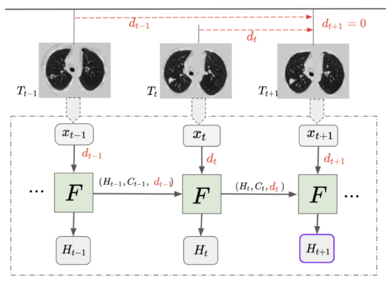

• VISTA3D: A unified segmentation foundation model for 3D medical imaging - CVPR 2025 (20 citations)
• MAISI: Medical AI for synthetic imaging - WACV 2025 (32 citations)
• Segment anything model (SAM) for digital pathology - IS&T 2025 (266 citations)
• Touchstone benchmark: Evaluating AI algorithms for medical segmentation - NeurIPS 2024 (22 citations)
2024
• MONAI Label: A framework for AI-assisted interactive labeling of 3D medical images - Medical Image Analysis (132 citations)
• Universal and extensible language-vision models for organ segmentation and tumor detection - Medical Image Analysis (31 citations)
• All-in-SAM: From weak annotation to pixel-wise nuclei segmentation - Journal of Physics: Conference Series (49 citations)
• HATS: Hierarchical adaptive taxonomy segmentation for panoramic pathology image analysis - MICCAI 2024 (4 citations)
• Deep conditional generative model for longitudinal single-slice abdominal CT harmonization - Journal of Medical Imaging (4 citations)
2023
• Transforming medical imaging with Transformers? A comparative review - Medical Image Analysis (300 citations)
• CLIP-driven universal model for organ segmentation and tumor detection - ICCV 2023 (290 citations)
• SwinUNETR-v2: Stronger swin transformers with stagewise convolutions - MICCAI 2023 (126 citations)
• UNesT: Local spatial representation learning with hierarchical transformer - Medical Image Analysis (94 citations)
• AbdomenAtlas-8K: Annotating 8,000 CT volumes for multi-organ segmentation - NeurIPS 2023 (57 citations)
• Semantic-aware contrastive learning for multi-object medical image segmentation - IEEE JBHI (8 citations)
• Democratizing pathological image segmentation with lay annotators - MICCAI 2023 (8 citations)
• Time-distance vision transformers in lung cancer diagnosis - Medical Imaging 2023 (22 citations)
2022
• UNETR: Transformers for 3D medical image segmentation - WACV 2022 (3013 citations)
• Self-supervised pre-training of swin transformers for 3D medical image analysis - CVPR 2022 (892 citations)
• MONAI: An open-source framework for deep learning in healthcare - arXiv preprint (858 citations)
• Reducing uncertainty in cancer risk estimation for patients with indeterminate pulmonary nodules - Computers in Biology and Medicine (18 citations)
• Multi-contrast computed tomography healthy kidney atlas - Computers in Biology and Medicine (11 citations)
• Label efficient segmentation of single slice thigh CT with two-stage pseudo labels - Journal of Medical Imaging (15 citations)
• Extending the value of routine lung screening CT with quantitative body composition assessment - SPIE 2022 (12 citations)
2021
• Swin UNETR: Swin transformers for semantic segmentation of brain tumors in MRI images - MICCAI BrainLesion Workshop (1864 citations)
• Deterministic inverse design of Tamm plasmon thermal emitters with multi-resonant control - Nature Materials (92 citations)
• High-resolution 3D abdominal segmentation with random patch network fusion - Medical Image Analysis (75 citations)
• Body part regression with self-supervision - IEEE Transactions on Medical Imaging (32 citations)
• Cancer risk estimation combining lung screening CT with clinical data elements - Radiology: Artificial Intelligence (18 citations)
• RAP-Net: Coarse-to-fine multi-organ segmentation with single random anatomical prior - ISBI 2021 (16 citations)
• Validation and estimation of spleen volume via computer-assisted segmentation - Journal of Medical Imaging (12 citations)
• Renal cortex, medulla and pelvicaliceal system segmentation on arterial phase CT images - Medical Imaging 2021 (12 citations)
• Phase identification for dynamic CT enhancements with generative adversarial network - Medical Physics (8 citations)
2020
• Time-distanced gates in long short-term memory networks - Medical Image Analysis (43 citations)
• Learning from dispersed manual annotations with an optimized data weighting policy - Journal of Medical Imaging (4 citations)
• Multi-path xD recurrent neural networks for collaborative image classification - Neurocomputing (15 citations)
• Deep multi-task prediction of lung cancer and cancer-free progression - Medical Imaging 2020 (15 citations)
• Automatic labeling of cortical sulci using spherical convolutional neural networks - ISBI 2020 (14 citations)
• Prediction of type II diabetes onset with computed tomography and electronic medical records - Workshop on Clinical Image-Based Procedures (21 citations)
• Contrast phase classification with a generative adversarial network - Medical Imaging 2020 (19 citations)
• Semi-supervised multi-organ segmentation through quality assurance supervision - SPIE 2020 (18 citations)
2019 and Earlier
• Distanced LSTM: Time-distanced gates in long short-term memory models for lung cancer detection - MLMI Workshop (61 citations)
• Stochastic tissue window normalization of deep learning on computed tomography - Journal of Medical Imaging (28 citations)
• Improving splenomegaly segmentation by learning from heterogeneous multi-source labels - SPIE 2019 (23 citations)
• More knowledge is better: Cross-modality volume completion and 3D+2D segmentation - MICCAI 2018 (23 citations)
2020

Time-Distanced Gates in Long Short-Term Memory Networks
Riqiang Gao, Yucheng Tang, Kaiwen Xu,
Yuankai Huo, Shunxing Bao, Sanja L. Antic, Emily S. Epstein, Steve Deppen, Alexis B. Paulson,
Kim L. Sandler, Pierre P. Massion, Bennett A. Landman